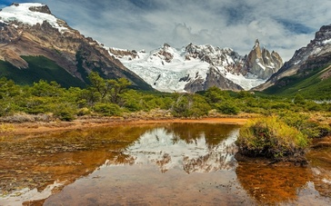
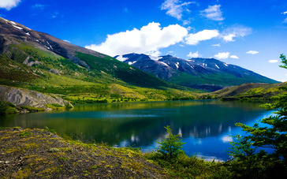
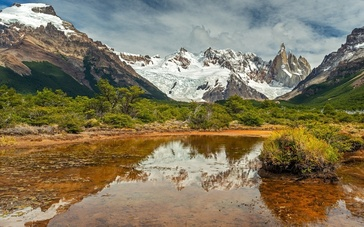
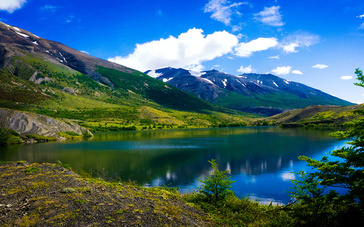

Tesoro de paisajes naturales
La Patagonia argentina enamora y conmueve, visitar localidades como El Bolsón, Villa La Angostura, Villa Traful y San Martín de los Andes es una invitación a sumergirse en su encanto único. Estos destinos combinan la majestuosidad de la naturaleza con la calidez de su gente, creando un recorrido que cautivará todos tus sentidos.
El Bolsón, conocido como el paraíso de los artesanos y los amantes de la tranquilidad, es un pueblo rodeado de montañas, ríos y bosques. Sus ferias de artesanía, productos locales y senderos como el del Cerro Piltriquitrón son perfectos para desconectar y conectarse con la esencia patagónica.
Villa La Angostura, apodada la “Jardín de la Patagonia,” es un destino que enamora con su elegancia natural. Este pintoresco pueblo, ubicado a orillas del lago Nahuel Huapi, ofrece paisajes de ensueño, como el Bosque de Arrayanes, único en el mundo, y la Ruta de los Siete Lagos, una de las más bellas del país.
Villa Traful es un rincón menos conocido pero igualmente cautivador. Su atmósfera tranquila y su lago cristalino, rodeado de montañas, hacen de este lugar un refugio perfecto para quienes buscan paz y contacto directo con la naturaleza. Sus miradores y actividades como el trekking o la pesca te harán sentir en armonía con el entorno.
San Martín de los Andes, ubicado a orillas del lago Lácar, es un destino que combina naturaleza, deporte y cultura. Este pueblo es el punto de partida ideal para explorar el Parque Nacional Lanín, con sus senderos, cascadas y vistas inolvidables. En invierno, es el hogar del reconocido centro de esquí Chapelco.
Cada una de estas localidades ofrece su propia versión de la magia patagónica. Desde caminatas por bosques milenarios hasta momentos de relax frente a lagos cristalinos, este viaje es una oportunidad para descubrir paisajes que parecen salidos de un cuadro. Si buscas aventura, serenidad y postales inolvidables, estos destinos en la Patagonia son ideales para ti.
 


